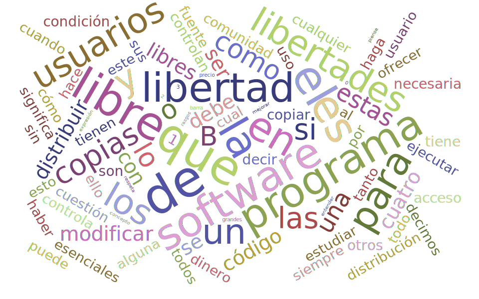

SL-UCA: Hello, head!
José Carlos García & Rafael Rodríguez
- ¿Qué es el software libre?
- Algunos proyectos de software libre científico
- Mathics: Una alternativa a Wolfram Mathematica
- DEMO
- Colaborar en Mathics
- Crear un módulo de Jupyter con soporte para Mathics
¿Qué es el software libre?

Principios básicos
El software libre en la ciencia